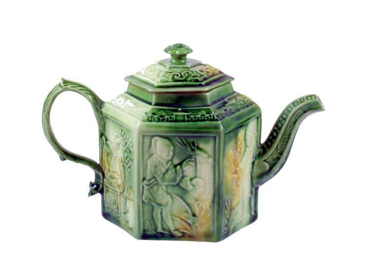
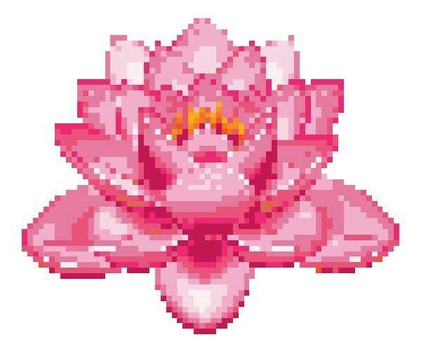

Why this project exists
I started thinking about Beyond the Mud because I kept coming back to a very simple question. We talk a lot about divorce, family conflict, emotional abuse, infidelity, or violence. There is research about them. There are professional resources. There are people who work with families and children.
But there is another part of the conversation that I think is often missed: what does it actually feel like to be the teenager inside all of this?
You can know that your parents' relationship is not your responsibility and still feel responsible for keeping everyone together. You can understand that a divorce is not your fault and still wonder what you did wrong. You can love someone and be angry with them at the same time. You can want your parents to stop being together and then feel horrible for wanting it. You can become so used to arguments that silence starts feeling suspicious. You can learn to read someone's footsteps, voice, facial expression, or the sound of a door closing before you even realize that you are doing it.
And sometimes you don't even know whether something is actually wrong, because it is the only version of family life you have known.
I don't think these contradictions can be explained by simply telling someone to "stay strong." Sometimes you don't feel strong. Sometimes you feel angry. Sometimes you feel nothing at all. Sometimes you are tired of being the understanding one. And sometimes you just want to be a teenager and not the person who is constantly thinking about what everyone else is feeling.
That is where Beyond the Mud begins.
Why the lotus?
The lotus was not chosen because it is a pretty symbol of overcoming difficulties. Actually, that interpretation is exactly what I want to question.
We usually tell the story like this: the lotus grows in mud. The mud is dark and dirty. The flower rises above it. Therefore, the mud made the flower beautiful. But I don't think that's true. The lotus does not need the mud to become morally valuable. The mud does not deserve credit for the flower. And the flower does not have to be grateful that it had to grow through something difficult.
That matters when we talk about people too. I don't want Beyond the Mud to tell teenagers that their suffering made them stronger, wiser, deeper, or somehow more special. Sometimes suffering just hurts. Sometimes it leaves consequences. Sometimes you don't become stronger immediately. Sometimes you just become exhausted. There is nothing inspirational about that exhaustion, but there is something important about acknowledging it.
The lotus is interesting to me for another reason: the flower and the mud can exist at the same time. The mud does not disappear because the lotus blooms. The roots are still down there. The past is still part of the story. The flower simply isn't limited to what is underneath it.
Maybe that is a better way to think about healing. Not becoming someone who has no connection to the past. Not pretending that nothing happened. But reaching a point where you can look at what happened and say:
"This is part of my life. But it is not the entirety of my life."
What this project is trying to do
Beyond the Mud combines psychological research, accessible explanations, lived experiences, reflection, and practical resources. I want the information to be understandable without turning complex psychological experiences into oversimplified labels.
Instead of just saying "this is trauma" or "this is resilience," the project should ask what those concepts actually look like in someone's everyday life. Why can two teenagers experience similar situations and react completely differently? Why can someone feel guilty about something they objectively did not cause? Why can a person become emotionally numb? Why do some people try to control everything when their home life feels uncontrollable, and others stop trying altogether? And where is the line between an understandable reaction to a difficult environment and something that might require professional help?
Statistics can explain patterns, but they cannot always explain what it feels like to live inside one. At the same time, personal stories alone are not enough either: one person's experience cannot become a universal rule. So the project exists somewhere between the two. Research can provide context, while lived experience gives that context a human face.
A different kind of support
I don't want Beyond the Mud to become another website that tells teenagers what they are supposed to feel. I don't want someone to read three paragraphs and be told that they are "strong." Maybe they are strong. Maybe they aren't. Maybe they are exhausted. Maybe they are angry. Maybe they don't know what they feel yet. There should be space for all of that.
This is a place where you can ask questions you might not be ready to ask another person. A place where you can learn that some of your reactions have explanations. A place where you can distinguish responsibility from guilt. A place where you can find professional and crisis support when you need something beyond what a website can provide. And eventually, maybe, a place where you can ask a question that has nothing to do with your family at all: what do I actually want from my own life?
- Not to provide one perfect answer.
- Not to replace professional help.
- Not to tell teenagers what they should feel.
- But to give them somewhere to begin.
My own case
I lived with my mother, and for three years I felt like I was the only one dealing with all the problems she was going through. It felt as though my own mother had become my child, and I had to take care of her emotionally. For a 12-year-old girl, that was overwhelming.
I barely knew who I was anymore. Whenever someone asked me, "Who are you?" or simply asked me to introduce myself, I would freeze, because I genuinely had no idea what to say. I was so focused on dealing with everything around me that I never really had the space to figure out who I was myself.
And even before that, I thought it was all my fault, that everything that happened in my family had happened just because of me. I had been blaming myself since I was 10, and in my head everything was tangled. I was literally dealing with myself while dealing with the state my mother was in.
Why might this happen?
When a child spends a long time surrounded by a parent's emotional difficulties, they may begin to feel responsible for things that were never theirs to manage. This can happen gradually. The child may start watching the parent's mood, trying to prevent problems, taking responsibility for their feelings, or believing that if they behave differently, everything might become better.
If a child already believes that family problems are their fault, these experiences can become even more confusing. Instead of having the space to develop their own identity, they may become focused on understanding and managing everyone around them. This can make it difficult to answer simple questions such as "Who are you?", because so much of the child's attention has been directed toward surviving the family environment rather than discovering themselves.
It does not mean that something is wrong with you. It may mean that you spent a long time carrying responsibilities that were too heavy for your age.
What can you do?
The first step may be separating what belongs to you from what never belonged to you. Your parent's emotions are not your responsibility. Their relationship problems are not your responsibility. And the fact that your family struggled does not mean that you caused it.
You can start by asking yourself:
- What am I actually feeling?
- What do I need right now?
- Is this my responsibility, or am I taking responsibility for someone else?
- What would I want if I did not have to keep someone else happy?
- What parts of my personality or interests have I never had the opportunity to explore?
You do not have to figure out who you are all at once. Sometimes rebuilding a sense of yourself starts with very small things: noticing what you enjoy, what makes you uncomfortable, what you believe, what you want, and what kind of relationships make you feel safe.
And if you are still living in a situation where you feel responsible for a parent's emotional well-being, you do not have to handle it alone. A trusted adult outside the conflict (a relative, teacher, school counselor, therapist, or another safe person) can help you carry something that should never have been yours to carry by yourself. Find support here.
Growing beyond the mud
For me, growing beyond the mud was also about figuring out who I was. I was trying to find things that felt like mine: my music, my style, my interests, my way of thinking. My room became my safe bubble. I covered the walls with things I loved, filled notebooks with thoughts, analyzed people's behavior, and read psychology books looking for something I could recognize in myself.
Little by little, I started finding those pieces. I found my own taste, my own interests, and a sense of identity that wasn't defined by my circumstances.
That's what Bloom Anyway means to me. There may be people and circumstances standing in your way. You may face setbacks, doubt, or things you cannot control. But your circumstances don't have to decide where you end up. You didn't choose all the circumstances that shaped you. But you can choose what you build from here.
So bloom anyway.
Don't stop till you get enough.
Don't Stop 'Til You Get Enough
Michael Jackson, 1979

